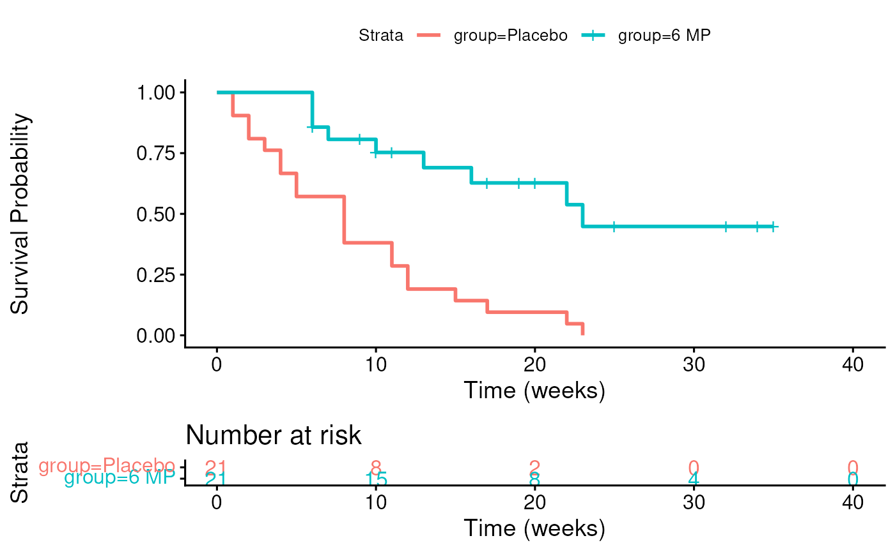
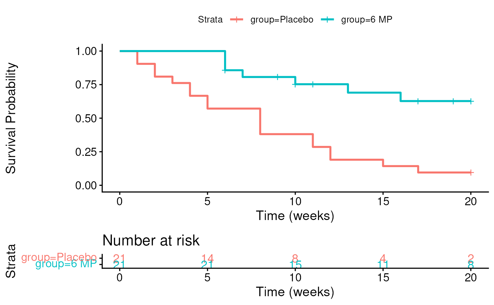

Session 6 lab exercise: Survival Analysis part 1
Levi Waldron
session_lab.RmdLearning objectives
- Calculate Kaplan-Meier estimates of survival probability over time
- Plot survival curves for censored time-to-event data
- Perform and interpret log-rank test
- Define “informative” censoring
Load the leukemia 6 MP clinical trial dataset
In this dataset, time is weeks until relapse or
censoring, and cens is the event indicator: 1 if the
patient relapsed and 0 if they were censored. Despite its name,
cens = 1 means an event, not a censored
observation. We set Placebo as the reference group.
library(tidyverse)
library(survival)
library(survminer)
leuk <- read_csv("leuk.csv") %>%
mutate(group = factor(group, levels = c("Placebo", "6 MP")))
table(leuk$group, leuk$cens)##
## 0 1
## Placebo 0 21
## 6 MP 12 9Surv() combines time and event status into a single
outcome. Censored times are printed with a +:
## [1] 6 6 6 7 10 13 16 22 23 6+ 9+ 10+ 11+ 17+ 19+ 20+ 25+ 32+ 32+
## [20] 34+ 35+ 1 1 2 2 3 4 4 5 5 8 8 8 8 11 11 12 12
## [39] 15 17 22 23Calculate the follow-up table for 6 MP patients
summary() of a survfit object gives the
follow-up table: at each event time, the number at risk, the number of
events, and the Kaplan-Meier estimate of survival with its 95%
confidence interval. Compare this to the follow-up table in the
lecture.
## Call: survfit(formula = Surv(time, cens) ~ 1, data = filter(leuk, group ==
## "6 MP"))
##
## time n.risk n.event survival std.err lower 95% CI upper 95% CI
## 6 21 3 0.857 0.0764 0.720 1.000
## 7 17 1 0.807 0.0869 0.653 0.996
## 10 15 1 0.753 0.0963 0.586 0.968
## 13 12 1 0.690 0.1068 0.510 0.935
## 16 11 1 0.627 0.1141 0.439 0.896
## 22 7 1 0.538 0.1282 0.337 0.858
## 23 6 1 0.448 0.1346 0.249 0.807Plot the Kaplan-Meier estimate for both groups
fit <- survminer::surv_fit(Surv(time, cens) ~ group, data = leuk)
survminer::ggsurvplot(fit,
xlab = "Time (weeks)",
ylab = "Survival Probability",
risk.table = TRUE, risk.table.col = "strata")
What is the time by which 25% of patients in each group have relapsed?
This is the time at which the estimated survival probability drops to
75%. quantile() of a survfit object returns
quantiles of the event time distribution, so this is the
25 column: the time by which 25% of patients have had an
event, and 75% are still event-free.
quantile(fit)## $quantile
## 25 50 75
## group=Placebo 4 8 12
## group=6 MP 13 23 NA
##
## $lower
## 25 50 75
## group=Placebo 2 4 8
## group=6 MP 6 16 23
##
## $upper
## 25 50 75
## group=Placebo 8 12 NA
## group=6 MP NA NA NA25% of 6 MP patients had relapsed by 13 weeks, compared to 4 weeks
for Placebo patients. The 75 column is NA for
the 6 MP group because the Kaplan-Meier estimate never drops below 25%
survival before follow-up ends.
Perform a log-rank test comparing the two groups
## Call:
## survdiff(formula = Surv(time, cens) ~ group, data = leuk)
##
## N Observed Expected (O-E)^2/E (O-E)^2/V
## group=Placebo 21 21 10.7 9.77 16.8
## group=6 MP 21 9 19.3 5.46 16.8
##
## Chisq= 16.8 on 1 degrees of freedom, p= 4e-05Cap follow-up times at 20 weeks
Suppose you were instructed to cap follow-up times at 20 weeks. Anyone still event-free at 20 weeks becomes censored at 20 weeks, and events after 20 weeks are no longer counted.
leuknew <- leuk %>%
mutate(newtime = pmin(time, 20)) %>%
mutate(newcens = ifelse(time <= 20, cens, 0))Kaplan-Meier plot:
fit20 <- survminer::surv_fit(Surv(newtime, newcens) ~ group, data = leuknew)
survminer::ggsurvplot(fit20,
xlab = "Time (weeks)",
ylab = "Survival Probability",
risk.table = TRUE, risk.table.col = "strata")
Log-rank test:
## Call:
## survdiff(formula = Surv(newtime, newcens) ~ group, data = leuknew)
##
## N Observed Expected (O-E)^2/E (O-E)^2/V
## group=Placebo 21 19 10 8.05 14
## group=6 MP 21 7 16 5.05 14
##
## Chisq= 14 on 1 degrees of freedom, p= 2e-04Give a hypothetical example of how censoring in this example might be “informative.”
If sicker patients were moved to another hospital where they weren’t followed up on, and were also more likely to relapse, this would be informative censoring.
Exercises
Exercise 1: Median survival and median potential follow-up time
Using the uncapped data, find the median survival time and its 95%
confidence interval for each group by printing fit. Then
estimate the median potential follow-up time for each group
using the reverse Kaplan-Meier method from the lecture, where censoring
is treated as the “event”:
survfit(Surv(time, 1 - cens) ~ group, data = leuk). Why is
the median potential follow-up time NA for the Placebo
group? Is there any reason to believe potential follow-up differed
between the two arms of this trial?
Exercise 2: Cumulative event function
Plot the cumulative event function
for both groups by adding fun = "event" to
ggsurvplot(). Using summary(fit, times = 10),
estimate the proportion of patients in each group who had relapsed by 10
weeks.
Exercise 3: Effect of capping follow-up
Compare the log-rank test from the uncapped data to the one capped at 20 weeks. How did the observed and expected numbers of events, and the chi-square statistic, change? Explain why capping follow-up changed the result, even though the Kaplan-Meier curves before 20 weeks are identical.